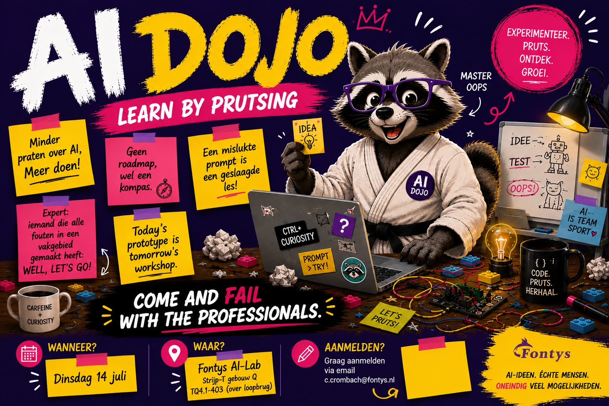

Wanneer?
Dinsdag 14 juli 2026
14:00 – 16:00
Fontys · Strijp-T 🦝
Learn by prutsing
Come and fail with the professionals.

Dinsdag 14 juli 2026
14:00 – 16:00
Fontys AI-Lab
TQ4.1-403
Strijp-T, gebouw Q
(over de loopbrug)
Graag even laten weten dat je komt — dan weten we ongeveer hoeveel stoelen we nodig hebben. Met je Fontys-pas en een mok kun je koffie tappen.
c.crombach@fontys.nlMinder praten over AI.
Meer doen!
Laagdrempelig samenkomen en uitwisselen. Misschien wil iemand wel iets vertellen wat-ie zelf al doet (of zou willen doen) met AI — leuk om mee af te trappen, maar niet te lang.
Gedacht aan Fontys-medewerkers die bijvoorbeeld de AI-3-daagse of Accelerate IT gedaan hebben: mensen die al aan het experimenteren zijn. Verder gewoon wat aanklooien, want dat doen we te weinig.
Vroeger had je van die computerclubs: een deel sjouwde zijn eigen computer mee (laptops hadden we toen nog niet) en ging daar zitten doen wat ze anders thuis zouden doen — en af en toe kletsen, elkaar dingen laten zien — “Heb je dit al gezien?” — superleerzaam, idealiter niet per se doelgericht.